MENU

CLOSE
MENU
CLOSE
自分の三線演奏動画を投稿する際、サムネイルも自分で制作しています。
なるべく原曲や原作と雰囲気が近くなるように、かつ三線の演奏動画であることが伝わりやすいように心がけて制作をしています。
2021年6月の投稿から自分でイラストも制作して、サムネイルに使うようになりました。その結果、イラスト無しと比べて少しだけエンゲージメントが良くなったように感じます。
 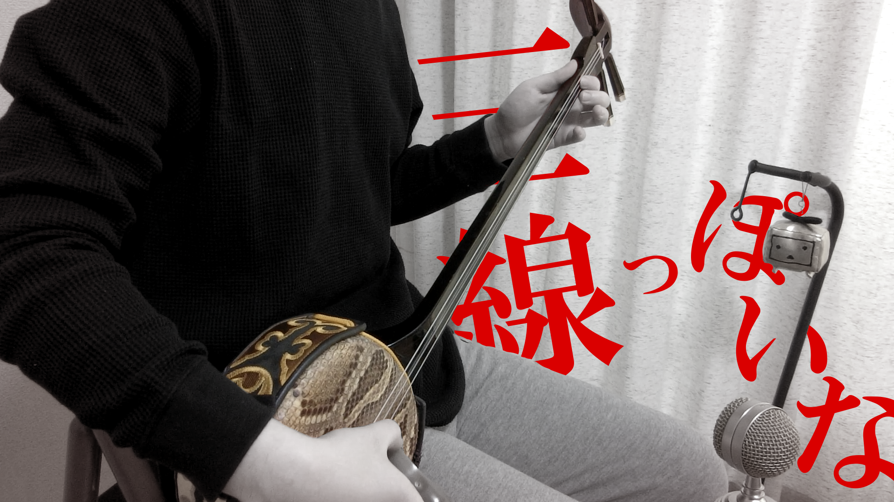
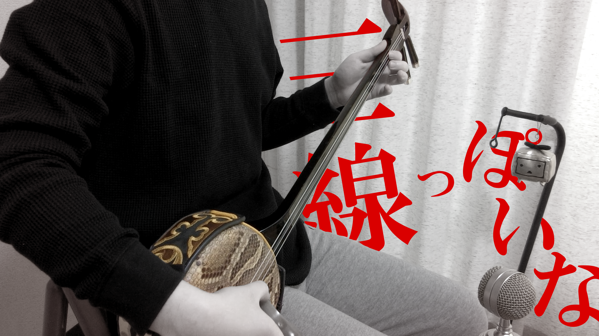
 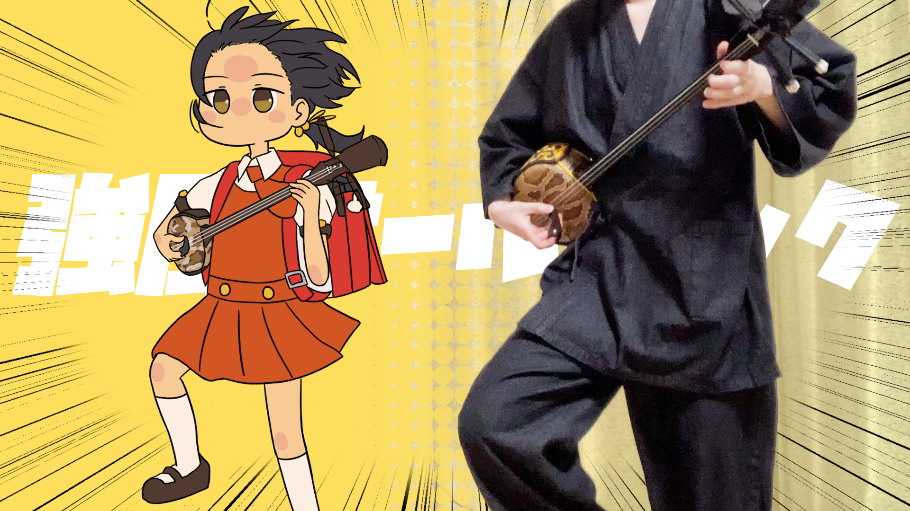
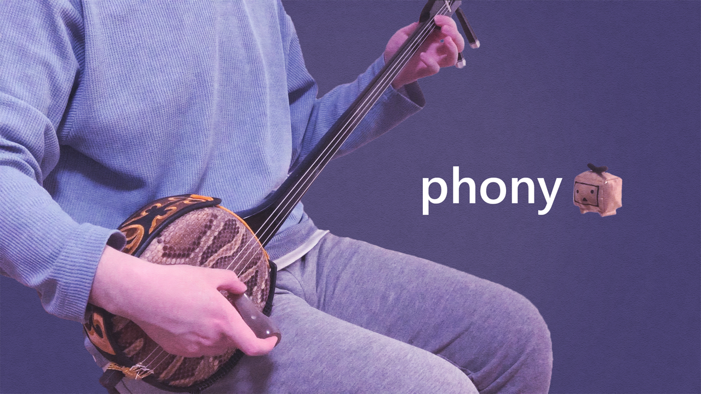
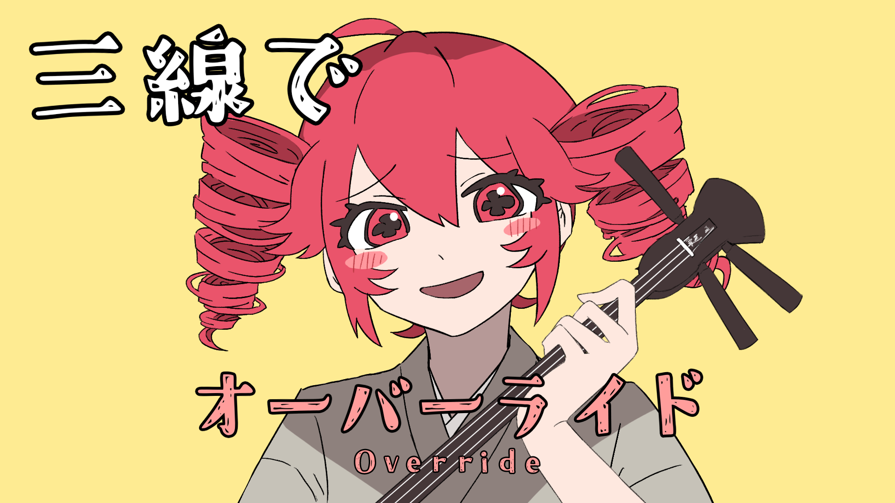
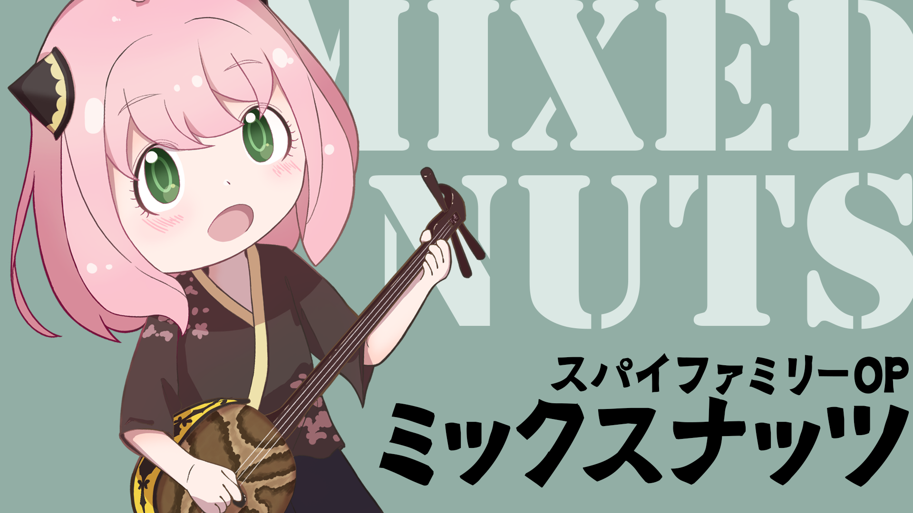
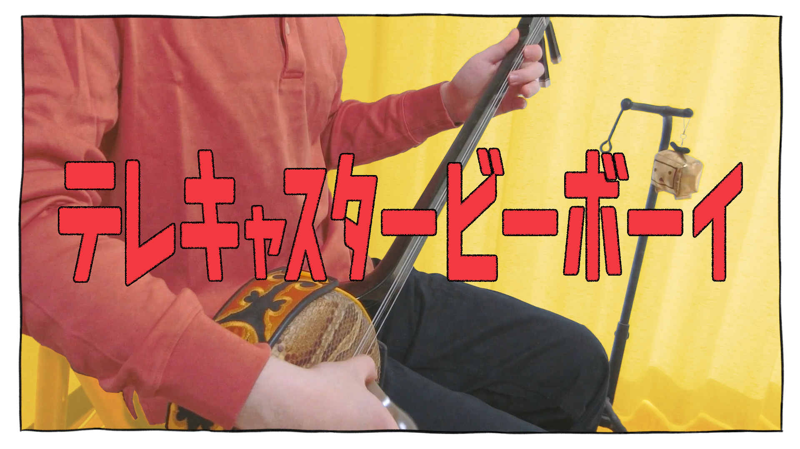
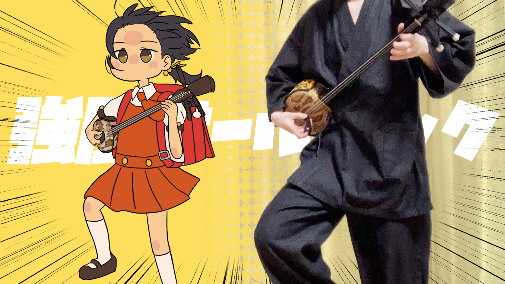
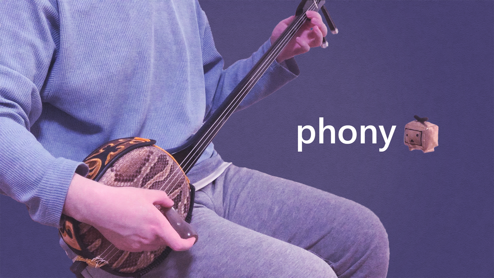
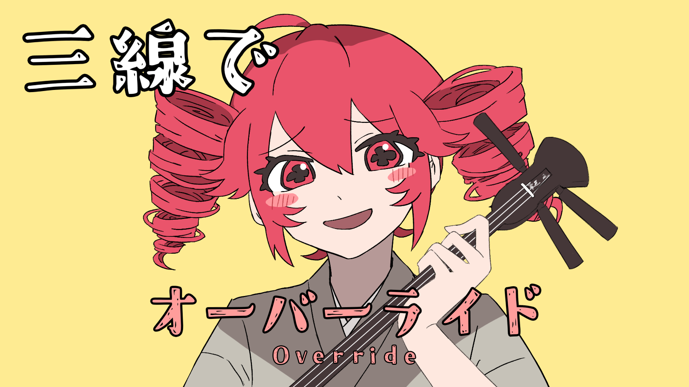
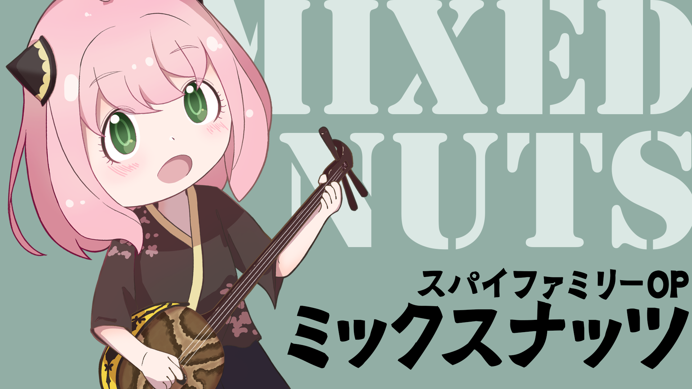
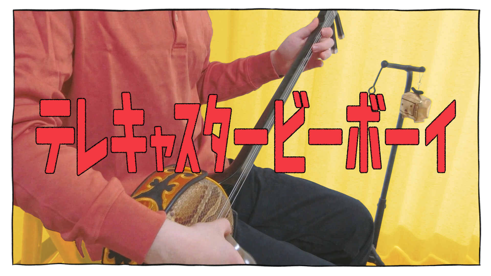
 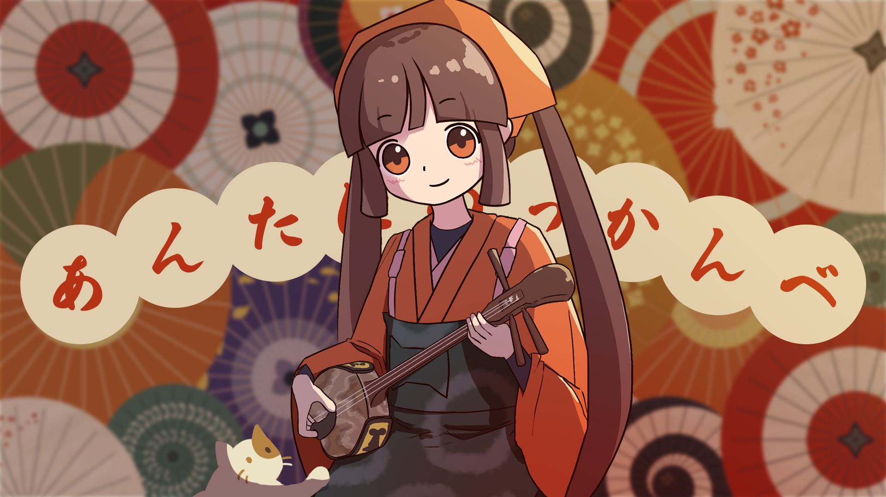
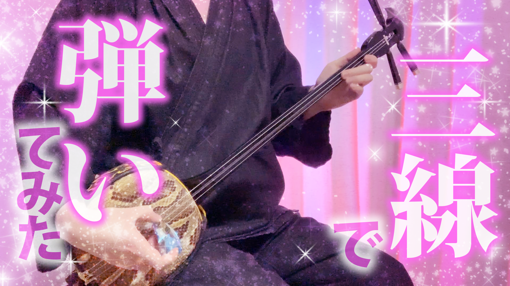
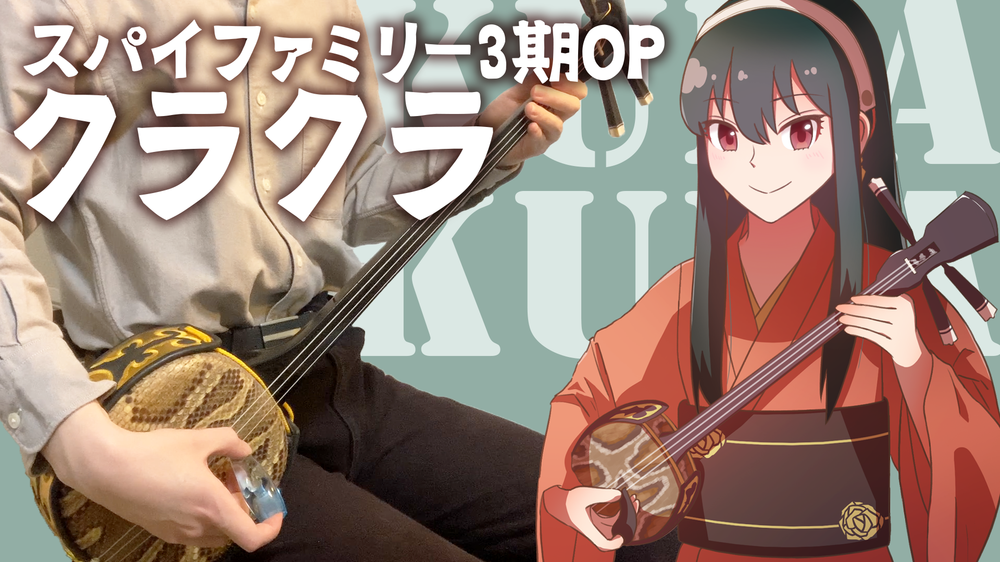
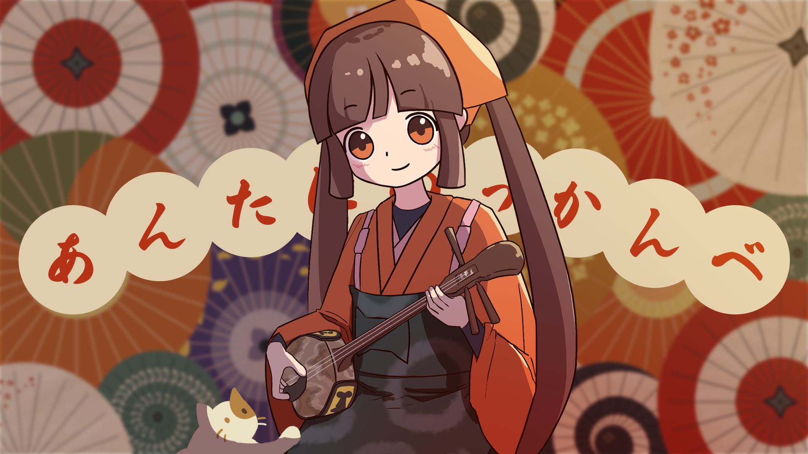
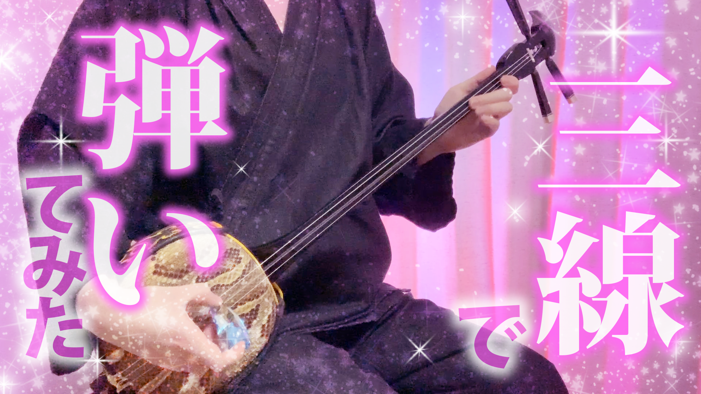
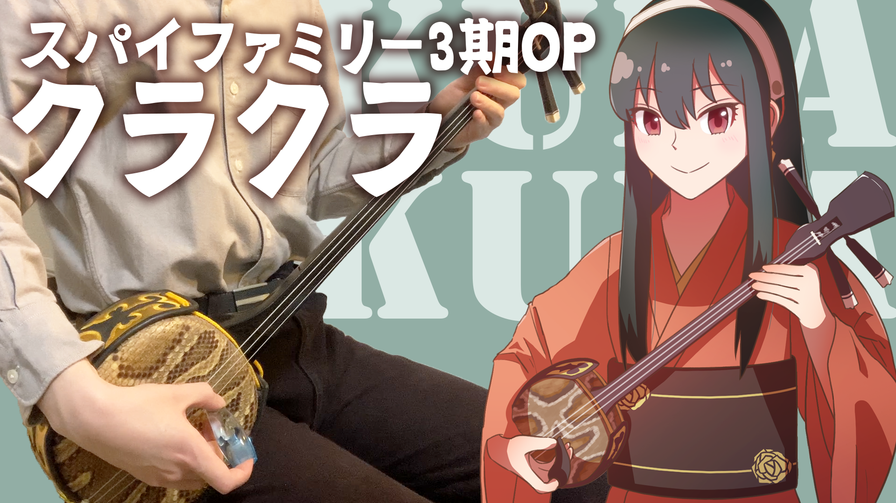